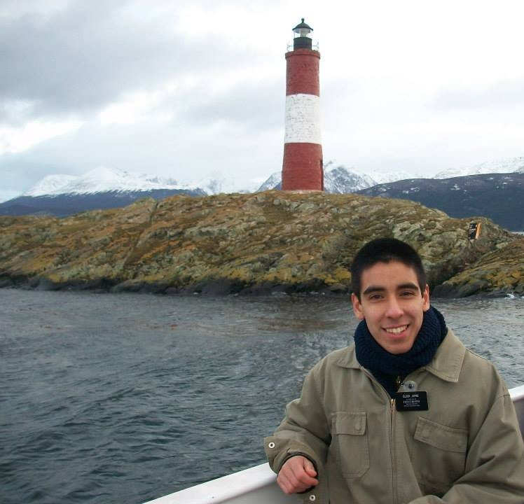

Ignacio Jofre | WDD 130
Hi, my name is Jofré Ignacio, and I'm from San Luis, Argentina. I love cold weather, and I was blessed to serve the Lord in the Comodoro Rivadavia mission. I'm currently studying software development through BYU Pathway because I believe technology can make life easier. I'm also passionate about science—I study chemistry as a hobby, and I worked for a year as a data analyst at a factory. I'm excited to begin this new journey and bring together everything I've learned along the way.